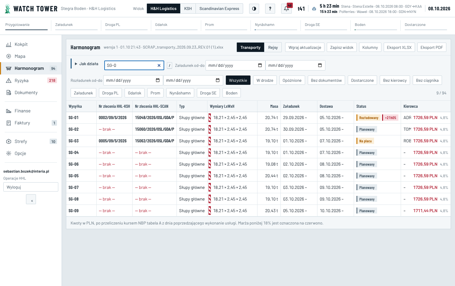
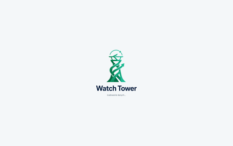
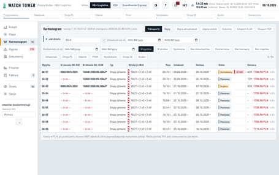

E22 · Aplikacja przeładowuje się sama — powrót do karty, wdrożenia, odświeżanie danych
„Dziś” — symulacje na produkcji 08.10, 02:36–02:40 (konto Operacje HHL, 1366 px; ukrycie i pokazanie karty, brak pliku po wdrożeniu) i błędy przeglądarek z bazy · „Po zmianie” — wpisy w dzwonku i komunikat HHL to „Przykład”
Dziś · powrót do karty albo aplikacji na telefonie

1 · Harmonogram, wpisane „SG-0”→

2 · po powrocie do karty: „Ładowanie danych…” przez ok. 3 s→

3 · ekran zbudowany od nowa, 29 zapytań do bazy
Biblioteka logowania (auth-js 2.117.1) przy każdym powrocie do karty ogłasza „zalogowano”. Aplikacja traktuje to jak nowe logowanie: zakrywa wszystko ekranem ładowania i pobiera dane od nowa. Na telefonie dzieje się to przy każdym przełączeniu aplikacji. Otwarte okno z wpisanym tekstem znika (cała aplikacja montuje się od nowa).
Dziś · wdrożenie przy otwartej karcie i odświeżanie danych
Po wdrożeniusymulacja: plik spraw 404
Otwarta karta ma adresy starych plików. Przejście do Ryzyk (sprawy ładowane osobno) daje pustą stronę: bez paska, bez komunikatu. Pomaga tylko ręczne odświeżenie. Tak ładowanych części jest 30. Funkcja ponowienia lazyRetry istnieje, ale nikt jej nie używa.
Błędy u użytkownikówclient_errors, bez sesji Claude
Dzień
„Failed to fetch dynamically imported module”
Wersji
29.09–04.10
5
—
05.10
27
17
06.10
8
5
Razem
40
Zasada wdrożeń: po każdym scaleniu, także kilka razy dziennie (AGENTS.md). Komunikat „Dostępna nowa wersja — odśwież” pojawia się tylko przy zmianie pliku sw.js, a zwykłe wdrożenie go nie zmienia.
Co odświeża się samo130 s bez ruchu na Kokpicie
Dane
Dziś
Pozycje aut
co 60 s
Ślad promu, licznik kafelków
tak
Dzwonek
nie
Statusy, Harmonogram
nie
Sprawy (Do zrobienia, Ryzyka)
nie
Dokumenty, faktury, ceny
nie
Reszta danych przychodzi tylko przy logowaniu, przy własnym zapisie albo przy powrocie do karty (przez przeładowanie wyżej). Aplikacja nie korzysta z powiadomień bazy o zmianach (Realtime).
Po zmianie · komputer · Operacje HHL
Jest nowa wersja Watch Tower. Odśwież, kiedy skończysz to, co robisz. Nic się nie zgubi. Odśwież teraz
Harmonogramwersja 1 z 01.10, 21:43na żywo · 02:45
SG-0Opóźnione · 0Bez dokumentów · 92wpisany tekst i otwarte okno zostają po powrocie do karty
SG-15 · brak awizacji przed załadunkiem — przed chwiląPrzykład
Stena Estelle · możliwe odwołanie rejsu — fala 3,4 m · 2 h temu
Dzwonek, statusy, sprawy i dokumenty zmieniają się same, gdy zmienią się w bazie (Realtime). Gdy połączenie się zrywa, aplikacja odświeża dane co minutę. Po powrocie do karty odświeża po cichu, bez ekranu ładowania. „Na żywo · 02:45” pokazuje czas ostatniego odświeżenia.
Zamiast pustej strony
Ta część aplikacji zmieniła się po aktualizacjiOdśwież stronę, żeby ją otworzyć. Twoje zapisane dane są bezpieczne.Odśwież
Najpierw aplikacja sama próbuje raz pobrać nowy plik i przeładować się, jeśli nic nie jest wpisane. Dopiero gdy to się nie uda, pokazuje ten komunikat. Pasek u góry nigdy nie znika.
Kiedy aplikacja ładuje się od nowa (po zmianie)
Sytuacja
Dziś
Po zmianie
Powrót do karty, przełączenie aplikacji na telefonie
ekran ładowania ok. 3 s, wszystko od nowa
nic nie znika; dane odświeżają się w tle
Odnowienie sesji (co godzinę)
bez zmian na ekranie
bez zmian na ekranie
Nowe dane w bazie
widać dopiero po powrocie do karty albo po zapisie
w ciągu sekund (Realtime), w razie przerwy co 60 s
Wdrożenie nowej wersji
bez komunikatu; pusta strona przy przejściu do części ładowanej osobno
pasek „Jest nowa wersja”; po kliknięciu albo przy przejściu strony bez wpisanego tekstu — odświeżenie